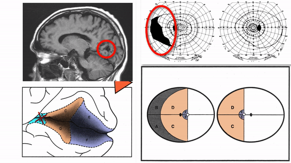

Retrochiasmal Segment

-
Optic tract
- Conveys signals from opposite visual hemifield to lateral geniculate body
-
Lateral geniculate body
- Contains synapses for signals coming from optic tract
- Maintains segregation of signals from each eye, as signals from ipsilateral eye terminate in layers 2,3, and 5, while signals from contralateral eye terminate in layers 1,4, and 6
- Modifies signals by means of descending attentional and limbic input from cerebrum
-
Optic radiations
- Contain axons exiting from lateral geniculate bodies
- Some axons loop around anterior temporal horn of lateral ventricle (“Meyer’s Loop”) and then rejoin rest of optic radiations, which form wide band along border of lateral ventricle, eventually dividing into superior and inferior forks at atrium of lateral ventricle Contain axons exiting from lateral geniculate bodies
- Meyer’s Loop axons rejoin the rest of optic radiations, which form a wide band along the border of lateral ventricle, eventually dividing into superior and inferior forks at the atrium of the lateral ventricle
- Superior fork of optic radiations enters superior portion of primary visual cortex; inferior fork of optic radiations enters inferior portion of primary visual cortex
- Inferior fork of optic radiations enters inferior portion of primary visual cortex
-
Primary Visual Cortex
- Signals coming from central 5-10 degrees of visual field terminate in posterior visual cortex; signals coming from between 10 degrees and 60 degrees eccentric
- Signals coming from between 10 degrees and 60 degrees eccentric to fixation terminate in intermediate primary visual cortex
- Signals coming from beyond 60 degrees (“unpaired temporal crescent”) terminate on anterior visual cortex


-
Optic tract lesions
- May produce either complete homonymous hemianopia (total damage) or incomplete but incongruous homonymous hemianopia (subtotal damage)
-
Lateral geniculate body lesions
- Complete homonymous hemianopias
- Mass lesions usually cause damage that extends beyond these small structures, destroying the entire lateral geniculate body, and causing complete homonymous hemianopias
- Anterior choroidal artery occlusion or lateral choroidal artery occlusion may produce hourglass homonymous hemianopias
-
Tip: inflammation and infarction may target BOTH lateral geniculate bodies in isolation


-
Meyer's loop lesions
- Produce superior wedge-shaped homonymous hemianopia, also called “pie-in-the-sky” defects;
- Common cause is temporal lobectomy for intractable seizures
- Optic radiations lesions
-
Primary visual cortex lesions
-
Produce complete homonymous hemianopia or the following incomplete homonymous hemianopias
- Superior homonymous quadrantanopia (lesion damages only inferior visual cortex)
- Inferior homonymous quadrantanopia (lesion damages only superior visual cortex)
- Homonymous paracentral scotomas (lesion restricted to posterior visual cortex)
- Macular-sparing homonymous hemianopia (lesion restricted to midportion and anterior portion of visual cortex
- Temporal crescent-sparing homonymous hemianopia (lesion spares anterior visual cortex)
- Temporal crescent scotoma (lesion restricted to anterior visual cortex)


-
Produce complete homonymous hemianopia or the following incomplete homonymous hemianopias
-
Tip: these 5 types of visual field defects are ALWAYS caused by occipital cortex lesions